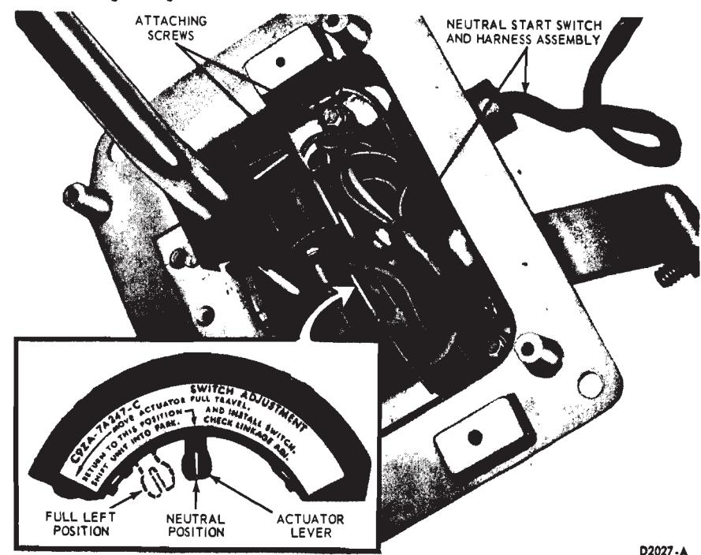
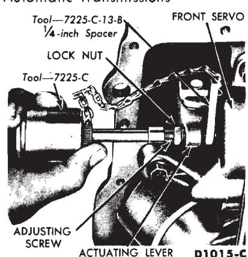
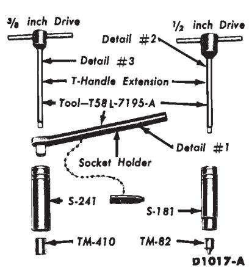
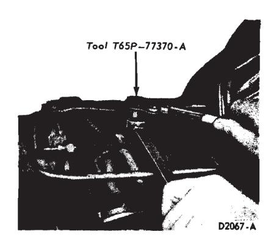
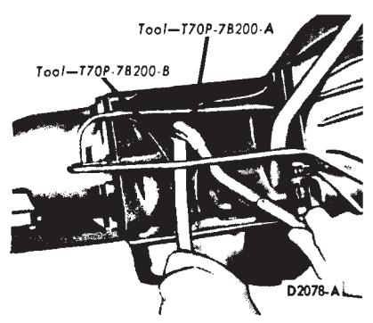
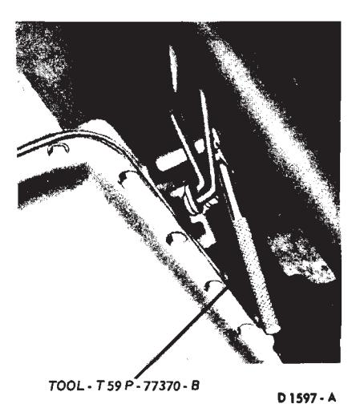
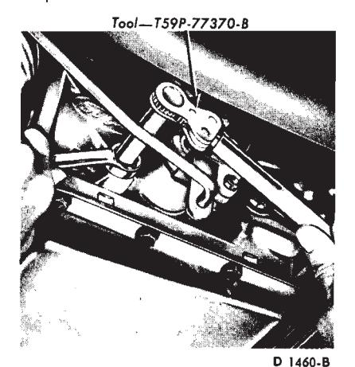
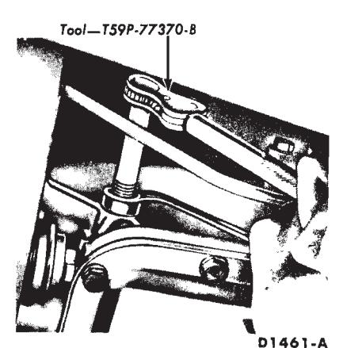
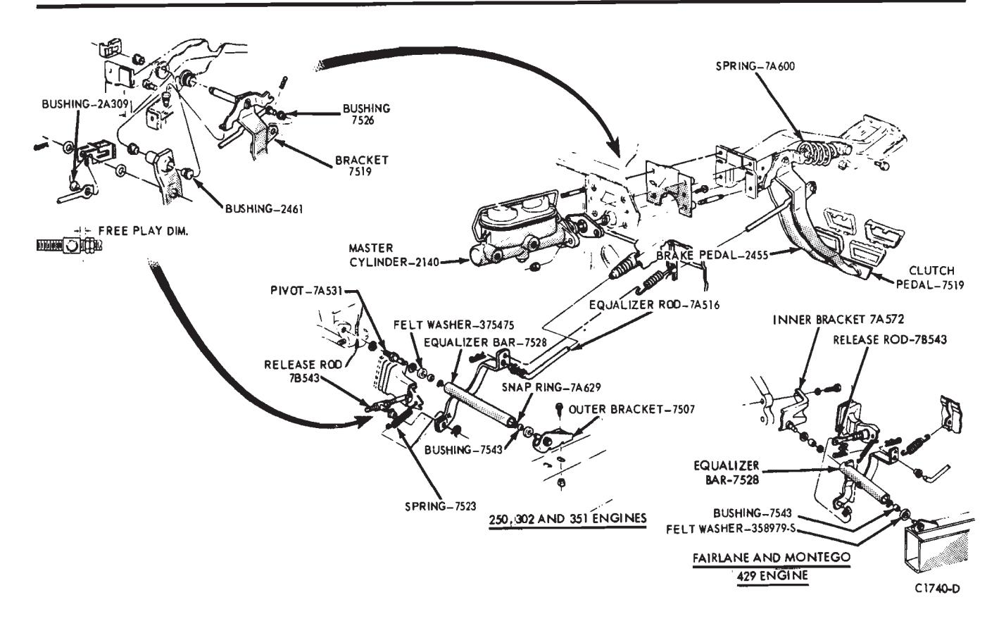

Transmission and Clutch · 54-03-04a
Check the light throttle upshifts in D. The transmission should start in first gear, shift to second, and then shift to third within the shift points specified in the specifications section (Group 17).
While the transmission is in third gear, depress the accelerator pedal through the detent (to the floor). The transmission should shift from third to second or third to first, depending on the vehicle speed.

Fig. 7 — Neutral Start Switch — Console Shift — Mustang-Cougar\Check the closed throttle downshift from third to first by coasting down from about 30 mph in third gear. The shift should occur within the limits specified in the specifications section.
When the selector lever is at 2, the transmission can operate only in second gear.
With the transmission in third gear and road speed over 30 mph, the transmission should shift to second gear when the selector lever is moved from D to 2 to 1. The transmission will downshift from second or third to
first gear when this same manual shift is made below approximately 25 mph with a C4 transmission 30 mph with a C6 transmission, or 35 mph with an FMX transmission. This check will determine if the governor pressure and shift control valves are functioning properly.
Maintenance Operations
Adjust Automatic and Semi-Automatic Transmission Band(s)
Refer to Group 42, Maintenance Schedule, for recommended frequency of band adjustment.
Automatic transmissions used in current production vehicles are variations of four basic transmissions: FMX, C6, C4 or C4S. As a guide to band adjustment, Figure 8 lists the combination of bands used in each transmission.
FMX Transmission
Front Band Adjustment
-
Loosen the pan attaching bolts starting at the rear of the pan and working toward the front. When most of the fluid has drained from the pan, remove the remainder of the attaching bolts. If the same fluid is to be used again in the transmission after the band adjustment, filter the fluid through a 100-mesh screen as it drains from the transmission. Make sure that the container is clean. Reuse the fluid only if it is in good condition.
-
Remove and thoroughly clean the pan, then remove the fluid screen and clip from the transmission. Clean the inside of the pan. Do not attempt to clean the filter. If dirty install a new one. Discard the pan gasket. Remove all gasket material from pan and pan mounting face of case.
-
Loosen the front servo adjusting screw locknut two full turns.
-
Pull back on the actuating lever, then insert the Gauge Block, Tool 7225-C13-B, of front band adjusting Tool 7225-C (Fig. 9) between the servo piston stem and adjusting screw.
Tighten the adjusting screw until the wrench overruns (this should be exactly 10 in-lbs). Remove the gauge block. Tighten the adjusting screw an additional 3/4 turn. Hold the adjusting screw stationary and tighten the locknut to specifications:
-
Install the transmission fluid screen and clip. Install the pan, using a new gasket.
-
Refill the transmission.
-
Start the engine and engage the transmission in each drive range to fill all fluid passages, then place the selector in the “P” position. Check the fluid level and add enough fluid to bring the level above the ADD mark on the dipstick with engine running at idle speed.
Alternate Front Band Adjustment
-
Drain the fluid from the transmission. If the same fluid is to be used again in the transmission after the band adjustment, filter the fluid through a 100-mesh screen as it drains from the transmission. Re-use the fluid only if it is in good condition.
-
Remove and thoroughly clean the pan and screen. Discard the pan gasket.
-
Loosen the front servo adjusting screw lock nut two full turns with a 9/16-inch wrench. Check the adjusting screw for free rotation in the actuating lever after the lock nut is loosened, and free the screw if necessary.
-
Pull the adjusting screw end of the actuating lever away from the servo body, and insert the 1/4 inch adjusting tool gauge block (Fig. 10) between the servo piston stem and the adjusting screw.
-
Install the socket handle on the 9/16-inch socket.
-
Insert the T-handle extension through the socket handle and socket, and install the screwdriver socket on the T-handle extension.
-
Place the tool on the adjusting screw so that the screwdriver socket engages the screw and the 9/16-inch socket engages the lock nut.
-
With a torque wrench on the Thandle extension, torque the adjusting screw to 10 in-lbs. Remove the gauge block. Tighten the adjusting screw an additional 3/4 turn.
-
Hold the adjusting screw stationary, and torque the lock nut to
TRANS-
MISSIONBAND
LocationUSEDFOR Front Second Gear FMX Rear Low Gear and
Reverse GearC6 Intermediate Second Gear C4 or C4S Front Sec Second Gear C4 01 C43 Rear Low Gear and
Reverse GearFig. 8 — Band Arrangement of Automatic Transmissions\

Fig. 9 — Typical Front Band Adjustment — FMX\
Fig. 10 — Front and Rear Band Adjusting Tools — FMX\
Fig. 11 — Adjusting Rear Band — Ford-Meteor-Fairlane-Montego\
Fig. 12 — Adjusting Rear Band — Mustang-Cougar\specification.
-
Place a new gasket on the pan, and install the screen and pan on the transmission.
-
Add 3 quarts of transmission fluid. Run the engine for 2 minutes. Place selector lever in P position. Check the fluid level and add enough fluid to bring the level above the ADD mark on the dipstick. Check fluid level with engine running at a slow idle.
Rear Band Adjustment
-
Remove all dirt from the adjusting screw threads, then oil the threads.
-
Loosen the reverse band adjusting screw lock nut. On Mustang and Cougar, use the tool shown in Figure 12 to loosen the nut. Using the torque wrench shown in Fig. 11 or 12, tighten the adjusting screw until the tool handle clicks. The tool is a preset torque wrench which clicks and breaks when the torque on the adjusting screw reaches 10 ft-lbs.
-
If the screw is found to be tighter than wrench capacity (10 ft-lbs torque), loosen the screw and tighten until the wrench clicks and breaks.
-
Back off the adjusting screw 1 1/2 turns. Hold the adjusting screw stationary and tighten the adjusting screw locknut to 35-40 ft-lbs torque. Severe damage may result if the adjusting screw is not backed off exactly

Fig. 13 — Intermediate Band Adjustment — C6 Transmission\
Fig. 14 — Front (Intermediate) Band Adjustment — C4 or C4S\
C6 Transmission
Transmission 1 1/2 turns.
Intermediate Band Adjustment
-
Raise the vehicle on a hoist or jack stands.
-
Clean the threads of the intermediate band adjustment screw.
-
Remove and discard the adjustment screw lock nut. Install a new lock nut on the adjustment screw, and leave it loose.
-
Tighten the band adjustment screw, as shown in Fig. 13, until the wrench overruns (this should be exactly 10 ft-lbs), then back it off exactly 1 full turn.
-
Hold the adjusting screw stationary and torque the lock nut to specifications.

Fig. 15 — Rear Band Adjustment — C4 or C4S Transmission\ -
Lower the vehicle.
C-4 or C4S Transmission
Intermediate Band Adjustment
- Clean all the dirt from the band adjusting screw area. Remove and discard the adjustment screw lock nut. Install a new lock nut on the adjustment screw, and leave it loose
- With the tool shown in Fig. 14, tighten the adjusting screw until the tool handle clicks. The tool is a preset torque wrench which clicks and overruns when the torque on the adjusting screw reaches 10 ft-lbs.
- Back off the adjusting screw exactly 1 3/4 turns.
- Hold the adjusting screw from turning and torque the lock nut to specification.
Low Reverse Band Adjustment
- Clean all the dirt from the band adjusting screw area. Remove and discard the adjustment screw lock nut. Install a new lock nut on the adjustment screw and leave it loose.
- With the tools shown in Fig. 15, tighten the adjusting screw until the tool handle clicks. The tool is a preset torque wrench which clicks and overruns when the torque on the adjusting screw reaches 10 ft-lbs.
- Back off the adjusting screw exactly 3 full turns.
- Hold the adjusting screw from turning and torque the lock nut to specification.
Adjust Clutch Pedal Travel
Check the clutch pedal free travel by inserting a feeler gauge of the specified thickness between the ad- justing nut on the release rod and the end of the rod adapter or sleeve (Fig. 16).

Fig. 16 — Fairlane and Montego Clutch Linkage Disassembled\Adjust the clutch pedal free travel whenever the clutch does not disengage properly, or when new clutch parts are installed. Improper adjustment of the clutch pedal free travel is one of the most frequent causes of clutch failure and can be a contributing factor in some transmission failures.
Montego, Cougar, Fairlane, Falcon and Mustang
- Disconnect the clutch return spring from the release lever.
- Loosen the release lever rod lock nut and adjusting nut (Figs. 16 and 17).
- Move the clutch release lever rearward until the release bearing lightly contacts the clutch pressure plate release fingers.
- Adjust the adapter length until the adapter seats in the release lever pocket.
- Insert a feeler gauge (0.136 inch for all except 390 and 428 CID engines; 0.178 inch for 390 and 428 CID engines) against the back face of the rod adapter. Then, tighten the ad- justing nut finger tight against the gauge.
- Tighten the lock nut against the adjusting nut, being careful not to disturb the adjustment. Torque the lock nut to specification.
- Remove the feeler gauge.
- Install the clutch return spring.
- Check the free travel at the pedal for conformance to specification. Readjust if necessary.
- As a final check, measure the pedal free travel with the transmission in neutral and the engine running a about 3000 rpm. If the free travel at this speed is not a minimum of 1/2 inch, readjust the clutch pedal free travel. Otherwise, the release fingers may contact the release bearing continuously, resulting in premature bearing and clutch failure.
Ford, Mercury and Meteor
Because of the relocation of the pedal assist spring from the equalizer bar to the clutch pedal bracket the free travel adjustment procedure for Ford, Mercury and Meteor models is revised as follows:
- Disconnect the clutch release lever spring from the release lever.
- Loosen the release lever rod locknut and adjusting nut (Fig. 18).
- Move the clutch release lever rearward until the release bearing lightly contacts the clutch pressure plate release fingers.
- Adjust the adapter length until the adapter seats in the release lever pocket.
- Insert a 0.194 inch feeler gauge against the back face of the rod adapter. Then, tighten the adjusting nut (finger tight) against the gauge.
- Tighten the locknut against the adjusting nut, being careful not to disturb the adjustment. Torque the locknut to specification.
- Remove the feeler gauge.
- Install the clutch release lever spring.
- Check the free travel at the pedal. Travel should be 7/8- 1 1/8 inches. Readjust if necessary.
- As a final check, measure the pedal free travel with the transmission in neutral and the engine running at about 3000 rpm. If the free travel at this speed is not a minimum of 1/2 inch, readjust the clutch pedal free travel. Otherwise, the release fingers may contact the release bearing continuously, resulting in premature bearing and clutch failure.